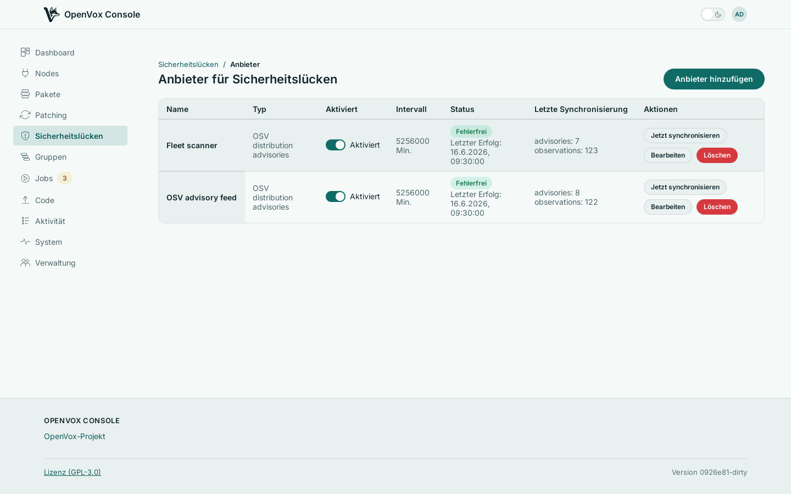

Nutzung
Sicherheitslücken verfolgen
Richten Sie Anbieter für Sicherheitslücken ein, lesen Sie die Befunde für die Flotte und erfahren Sie, was jeder Anbieter sehen kann und was nicht.
Die Konsole meldet, welche Nodes von welchen bekannten Sicherheitslücken betroffen sind, zusammengeführt aus einem oder mehreren Anbietern. Sie gleicht die Daten jedes Anbieters mit den Paketen ab, die jeder Node meldet, daher muss bei den Nodes das Melden von Paketen eingeschaltet sein: siehe Nodes hinzufügen.
Befunde zu sehen erfordert vulnerabilities:read; Anbieter zu konfigurieren erfordert vulnerabilities:manage. Keine von beiden ist in nodes:read enthalten: Befunde sind sensibler als ein Inventar.
Einen Anbieter wählen
| Anbieter | Daten aus | Zugangsdaten |
|---|---|---|
| OSV | die öffentliche OSV-Datenbank oder Ihr eigener Spiegel davon | keine |
| Tenable | Ihr Tenable-Tenant | API-Schlüssel |
Beliebig viele Anbieter können gleichzeitig laufen, auch zwei OSV-Anbieter mit unterschiedlichen Datenquellen. Eine Sicherheitslücke, die von mehreren gemeldet wird, erscheint einmal und führt den Schweregrad und die behobene Version jedes Anbieters auf.
Nichts verlässt die Konsole, bis Sie einen Anbieter aktivieren.
Zugangsdaten vorbereiten
Ein Anbieter mit Zugangsdaten braucht einen Schlüssel, mit dem sie in der Datenbank versiegelt werden. Erzeugen Sie einen und geben Sie ihn in CONSOLE_SECRETS_KEY_FILE an:
openssl rand -base64 32 > secrets.key
chmod 600 secrets.key
Ohne ihn funktioniert OSV, und ein Anbieter, der Zugangsdaten braucht, wird mit einem Fehler abgelehnt, der die Einstellung nennt.
Sichern Sie den Schlüssel mit Ihren Datenbank-Backups, bewahren Sie ihn aber getrennt davon auf. Sein Verlust kostet keine Befunde, aber alle gespeicherten Zugangsdaten werden unlesbar, und diese Anbieter schlagen fehl, bis ihre Zugangsdaten unter einem neuen Schlüssel erneut eingegeben werden.
Einen Anbieter hinzufügen
- Öffnen Sie Sicherheitslücken und dann Anbieter.
- Fügen Sie einen Anbieter des gewünschten Typs hinzu und füllen Sie seine Einstellungen und etwaige Zugangsdaten aus. Die Konsole zeigt gespeicherte Zugangsdaten nie wieder an; lassen Sie ein Zugangsdatenfeld beim Bearbeiten leer, um die gespeicherten beizubehalten.
- Aktivieren Sie ihn.


Er synchronisiert sofort und danach nach Zeitplan, bei OSV standardmäßig stündlich. Befunde werden aktualisiert, wenn ein Anbieter synchronisiert, nicht bei jedem Puppet-Lauf.
Was OSV herunterlädt
OSV lädt Daten nur für die Distributionen herunter, die Ihre Flotte betreibt, standardmäßig per HTTPS von storage.googleapis.com. Die erste Synchronisierung einer Distribution lädt ihr gesamtes Archiv herunter – etwa 70 MB für Debian und 700 MB für Ubuntu –, spätere Synchronisierungen nur das, was sich geändert hat.
Air-Gapped-Standorte
Richten Sie den Datenspeicherort eines OSV-Anbieters auf einen internen Spiegel des OSV-Buckets, für jede Distribution gleich aufgebaut: ihre all.zip, ihre modified_id.csv und eine JSON-Datei pro geändertem Eintrag. Ein einfacher statischer Webserver genügt, und das Kopieren des Verzeichnisses jeder Distribution reicht aus, um ihn zu befüllen:
gsutil -m rsync -r gs://osv-vulnerabilities/Debian ./Debian
Verzeichnisnamen enthalten Leerzeichen, etwa Rocky Linux und Red Hat.
Tenable
Ein Tenable-Anbieter importiert zunächst jeden offenen Befund, danach nur noch Änderungen. Jedes Tenable-Asset wird einem Node zugeordnet, indem seine Namen mit dem Certname und dem gemeldeten FQDN jedes Nodes abgeglichen werden. Ein Asset, das zu keinem oder zu mehreren Nodes passt, wird übersprungen und als nicht zugeordnet gezählt; ein wachsender Zähler bedeutet meist, dass Tenable andere Namen sieht als Ihre Certnames.
Die Befunde lesen
Die Seite Sicherheitslücken listet Befunde über die gesamte Flotte auf, die schwersten zuerst, mit der Anzahl betroffener Nodes. Standardmäßig zeigt sie Befunde mit verfügbarer Behebung, also das, was Patchen ändern würde; setzen Sie Behebung auf Alle, um auch solche ohne veröffentlichte Behebung einzuschließen.
Ein Node, den kein aktivierter Anbieter bewerten konnte, wird als nicht bewertet angezeigt, mit der Begründung jedes Anbieters, niemals als sauber:
| Grund | Bedeutung |
|---|---|
| nicht unterstütztes Betriebssystem | OSV deckt Debian, Ubuntu, AlmaLinux, Rocky Linux und RHEL 7 bis 10 ab |
| keine Paketdaten | der Node meldet keine Pakete; schalten Sie das Melden für ihn ein |
| Agent-Upgrade erforderlich | die Paketdaten des Nodes sind zu alt für einen verlässlichen Abgleich; ein Upgrade seines Node-Agenten behebt das bei seinem nächsten Puppet-Lauf |
| von Tenable nicht gesehen | kein Tenable-Asset passte zum Node |
| noch nicht synchronisiert | der Anbieter hat noch keine Synchronisierung abgeschlossen |
Was Sie von OSV erwarten können
- Unter Debian und Ubuntu erscheinen viele Sicherheitslücken, die die Distribution als vernachlässigbar einstuft oder nicht beheben will, trotzdem als Befunde ohne veröffentlichte Behebung. Deshalb beginnt die Liste bei „Behebung verfügbar“.
- RHEL-Nodes werden nur mit den Haupt-Repositories abgeglichen. Nodes, die Extended-Support- oder Add-on-Repositories nutzen, können Befunde zeigen, die nicht auf sie zutreffen.
- AlmaLinux veröffentlicht keinen Schweregrad, daher werden seine Befunde als Unbekannt angezeigt.
Befunde zu alten Kerneln und anderen Paketen, die Sie längst entfernt haben, stammen meist von Paketen, die ohne Purge entfernt wurden und deren Konfigurationsdateien zurückgeblieben sind. Bereinigen Sie sie auf dem Node mit apt purge '~c'; die Befunde schließen sich bei der nächsten Synchronisierung des Anbieters.